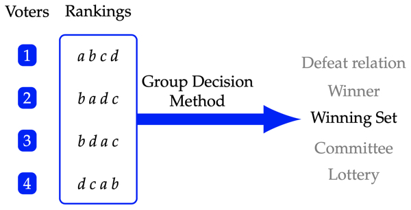

Overview¶
E. Pacuit (2019). Voting Methods, Stanford Encyclopedia of Philosophy.

Rankings and Profiles¶
\(V\) is a finite set of voters.
\(X\) is a (typically finite) set of alternatives, or candidates.
A relation \(P\) on \(X\) is a linear order if it is transitive (for all \(x,y,z\in X\), if \(x\mathrel{P} y\) and \(y\mathrel{P} z\), then \(x\mathrel{P} z\), irreflexive (there is no \(x\in X\) with \(x\mathrel{P}\)), and complete (for all \(x,y\in X\), either \(x\mathrel{P} y\) or \(y\mathrel{P} x\).
\(\mathcal{L}(X)\) is the set of all linear orders over the set \(X\).
A profile for \(X\) and \(V\) is a function \(\mathbf{P}\) assigning to \(i\in V\) a linear order \(\mathbf{P}_i\) on \(X\). So, \(a\mathbf{P}_ib\) means that voter \(i\) strictly prefers candidate \(a\) to \(b\), or \(a\) is ranked above \(b\). Let \(X(\mathbf{P})\) be the candidates in \(\mathbf{P}\) and \(V(\mathbf{P})\) the voters in \(\mathbf{P}\).
For a profile \(\mathbf{P}\) and candidates \(x,y\in X(\mathbf{P})\), the margin for \(x\) over \(y\) is $\(Margin_{\mathbf{P}}(x,y) = |\{i\mid x\mathrel{\mathbf{P}_i} y\}| - |\{i\mid y\mathrel{\mathbf{P}_i} x\}|\)$
# import the Profile class
from voting.profiles import Profile
---------------------------------------------------------------------------
ModuleNotFoundError Traceback (most recent call last)
<ipython-input-1-99906ff59f9d> in <module>
1 # import the Profile class
----> 2 from voting.profiles import Profile
~/Dropbox/teaching/ppe-simulation/notes/preference-aggregation/voting/profiles.py in <module>
11 from numba import jit
12 import networkx as nx
---> 13 from tabulate import tabulate
14 import matplotlib.pyplot as plt
15
ModuleNotFoundError: No module named 'tabulate'
num_cands = 3
rankings = [
(0, 1, 2),
(2, 1, 0),
(1, 2, 0)
]
rcounts = [1, 2, 3]
#1 voter with the ranking (0,1,2),
#2 voters with the ranking (2,1,0) and
#3 voters with the ranking (1,2,0)num_cands = 3
prof = Profile(rankings, num_cands, rcounts=rcounts)
print(f"There are {prof.num_voters} voters in the profile.")
# display prof2 - the header is the number of voters with each ranking
prof.display()
---------------------------------------------------------------------------
NameError Traceback (most recent call last)
<ipython-input-2-b19c230fff81> in <module>
9 #2 voters with the ranking (2,1,0) and
10 #3 voters with the ranking (1,2,0)num_cands = 3
---> 11 prof = Profile(rankings, num_cands, rcounts=rcounts)
12 print(f"There are {prof.num_voters} voters in the profile.")
13
NameError: name 'Profile' is not defined
rankings = [
(0, 1, 2),
(2, 1, 0),
(1, 2, 0)
]
rcounts = [1, 2, 3]
#1 voter with the ranking (0,1,2),
#2 voters with the ranking (2,1,0) and
#3 voters with the ranking (1,2,0)num_cands = 3
cmap={0:"a", 1:"b", 2:"c"}
prof2 = Profile(rankings, num_cands, rcounts=rcounts, cmap=cmap)
# display prof2 - the header is the number of voters with each ranking
# the candidate names are used in cmap
prof2.display()
---------------------------------------------------------------------------
NameError Traceback (most recent call last)
<ipython-input-3-0edb615b3713> in <module>
9 #3 voters with the ranking (1,2,0)num_cands = 3
10 cmap={0:"a", 1:"b", 2:"c"}
---> 11 prof2 = Profile(rankings, num_cands, rcounts=rcounts, cmap=cmap)
12
13 # display prof2 - the header is the number of voters with each ranking
NameError: name 'Profile' is not defined
There are a number of useful methods associated with a Profile. Suppose that \(\mathbf{P}\) is a profile and \(a,b\in X(\mathbf{P})\).
The support for \(a\) over \(b\) is \(|\{i\in V(\mathbf{P})\mid a\mathrel{\mathbf{P}_i}b\}|\).
The margin of \(a\) over \(b\) in \(\mathbf{P}\) is \(Margin_\mathbf{P}(a,b)=|\{i\in V(\mathbf{P})\mid a\mathrel{\mathbf{P}_i}b\}| -|\{i\in V(\mathbf{P})\mid b\mathrel{\mathbf{P}_i} a\}|.\)
Candidate \(a\) is majority preferred to \(b\) when \(Margin_\mathbf{P}(a,b)> 0\).
rankings = [
(0, 1, 2, 3),
(2, 3, 1, 0),
(3, 1, 2, 0),
(1, 2, 0, 3),
(1, 3, 2, 0)
]
num_cands = 4
prof = Profile(rankings, num_cands)
prof.display()
c1 = 2
c2 = 3
print("")
print(f"The candidates are {list(prof.candidates)}")
print(f"support of {c1} over {c2}: ", prof.support(c1,c2))
print(f"support of {c2} over {c1}: ", prof.support(c2, c1))
print(f"Margin({c1},{c2}) = ", prof.margin(c1,c2))
print(f"Margin({c2},{c1}) = ", prof.margin(c2,c1))
print(f"{c1} is majority preferred to {c2} is ", prof.majority_prefers(c1,c2))
print(f"{c2} is majority preferred to {c1} is ", prof.majority_prefers(c2,c1))
print(f"The number of voters that rank {c1} in 1st place is ", prof.num_rank(c1, 1))
print(f"The number of voters that rank {c1} in 2nd place is ", prof.num_rank(c1, 2))
print(f"The size of a strict majority of voters is ", prof.strict_maj_size())
---------------------------------------------------------------------------
NameError Traceback (most recent call last)
<ipython-input-4-6fbc97f9e2cb> in <module>
7 ]
8 num_cands = 4
----> 9 prof = Profile(rankings, num_cands)
10
11 prof.display()
NameError: name 'Profile' is not defined
In addition, there are methods for each of the following:
Condorcet winner: a candidate that is majority preferred to every other candidate (returns None if the Condorcet winner does not exist)
weak Condorcet winner: a list of candidates that are not majority preferred by any other candidate (returns None if no such candidate exists)
Condorcet loser: a candidate that is majority dispreferred by every other candidate (returns None if the Condorcet loser does not exist)
Plurality scores: a dictionary associating with each candidate its plurality score
Borda scores: a dictionary associating with each candidate its Borda score
rankings = [
(0, 1, 2, 3),
(2, 3, 1, 0),
(3, 1, 2, 0),
(1, 2, 0, 3),
(1, 3, 2, 0)
]
num_cands = 4
prof = Profile(rankings, num_cands)
prof.display()
print("")
print(f"The plurality scores are ", prof.plurality_scores())
print(f"The Borda scores are ", prof.borda_scores())
print(f"The Condorcet winner is ", prof.condorcet_winner())
print(f"The weak Condorcet winner is ", prof.weak_condorcet_winner())
print(f"The Condorcet loser is ", prof.condorcet_loser())
---------------------------------------------------------------------------
NameError Traceback (most recent call last)
<ipython-input-5-798c1ebf6d40> in <module>
7 ]
8 num_cands = 4
----> 9 prof = Profile(rankings, num_cands)
10
11 prof.display()
NameError: name 'Profile' is not defined
Margin Graphs¶
The margin graph of a profile \(\mathbf{P}\) is a weighted directed graph where the nodes are the candidates and there is an edge from \(a\) to \(b\) when \(Margin_{\mathbf{P}}(a,b)>0,\) weighted by \(Margin_{\mathbf{P}}(a,b)\).
A margin graph for a Profile object is a networkx object.
rankings = [
(0, 1, 2, 3),
(2, 3, 1, 0),
(3, 1, 2, 0),
(1, 2, 0, 3),
(1, 3, 2, 0)
]
num_cands = 4
prof = Profile(rankings, num_cands)
prof.display()
mg = prof.margin_graph()
# mg is a networkx object
print(type(mg))
print("The nodes are the candidates ", mg.nodes)
print("The edges are the majority relations ", mg.edges)
print("The weights are the margins \n", "\n ".join([f"Edge {e}: {mg.get_edge_data(*e)}" for e in mg.edges]))
# display the margin graph
prof.display_margin_graph()
---------------------------------------------------------------------------
NameError Traceback (most recent call last)
<ipython-input-6-fc312f4f9d63> in <module>
7 ]
8 num_cands = 4
----> 9 prof = Profile(rankings, num_cands)
10
11 prof.display()
NameError: name 'Profile' is not defined
Majority Cycle¶
rankings = [
(0, 1, 2),
(1, 2, 0),
(2, 0, 1)
]
num_cands = 3
prof = Profile(rankings, num_cands)
prof.display()
prof.display_margin_graph()
---------------------------------------------------------------------------
NameError Traceback (most recent call last)
<ipython-input-7-d301992144de> in <module>
5 ]
6 num_cands = 3
----> 7 prof = Profile(rankings, num_cands)
8
9 prof.display()
NameError: name 'Profile' is not defined
rankings = [
(0, 1, 2),
(1, 2, 0),
(2, 0, 1)
]
rcounts = [2, 2, 3]
num_cands = 3
prof = Profile(rankings, num_cands, rcounts = rcounts)
prof.display()
prof.display_margin_graph()
---------------------------------------------------------------------------
NameError Traceback (most recent call last)
<ipython-input-8-2c6a47a2f3d9> in <module>
6 rcounts = [2, 2, 3]
7 num_cands = 3
----> 8 prof = Profile(rankings, num_cands, rcounts = rcounts)
9
10 prof.display()
NameError: name 'Profile' is not defined
Voting Methods¶
A voting method is a function \(F\) mapping profiles (in the domain of \(F\)) to non-empty set of candidates: \(\varnothing \neq F(\mathbf{P})\subseteq X(\mathbf{P})\)
from voting.voting_methods import *
# all_vms is an list of all the voting methods that have been implemented
# all_vms_mg is a list of all voting methods that accept margin graphs as input
---------------------------------------------------------------------------
ModuleNotFoundError Traceback (most recent call last)
<ipython-input-9-8f3b14a3b80b> in <module>
----> 1 from voting.voting_methods import *
2 # all_vms is an list of all the voting methods that have been implemented
3 # all_vms_mg is a list of all voting methods that accept margin graphs as input
~/Dropbox/teaching/ppe-simulation/notes/preference-aggregation/voting/voting_methods.py in <module>
7 '''
8
----> 9 from voting.profiles import Profile, _borda_score, _find_updated_profile
10 from voting.generate_profiles import generate_profile
11 from itertools import permutations, product
~/Dropbox/teaching/ppe-simulation/notes/preference-aggregation/voting/profiles.py in <module>
11 from numba import jit
12 import networkx as nx
---> 13 from tabulate import tabulate
14 import matplotlib.pyplot as plt
15
ModuleNotFoundError: No module named 'tabulate'
vms = [
plurality,
borda,
plurality_with_runoff,
hare,
coombs,
]
for vm in all_vms:
print(vm.name)
print(vm.__doc__)
---------------------------------------------------------------------------
NameError Traceback (most recent call last)
<ipython-input-10-4d03ba343888> in <module>
1 vms = [
----> 2 plurality,
3 borda,
4 plurality_with_runoff,
5 hare,
NameError: name 'plurality' is not defined
rankings = [
(0, 1, 2, 3),
(2, 3, 1, 0),
(3, 1, 2, 0),
(1, 2, 0, 3),
(1, 3, 2, 0)
]
num_cands = 4
prof = Profile(rankings, num_cands)
prof.display()
for vm in vms:
print(f"{vm.name} winners: {vm(prof)}")
---------------------------------------------------------------------------
NameError Traceback (most recent call last)
<ipython-input-11-7cf85bf3dc5d> in <module>
7 ]
8 num_cands = 4
----> 9 prof = Profile(rankings, num_cands)
10
11 prof.display()
NameError: name 'Profile' is not defined
rankings = [(0,1,2), (1,2,0), (2,0,1)]
rcounts = [2,2,1]
num_cands = 3
prof = Profile(rankings, num_cands, rcounts=rcounts)
prof.display()
for vm in vms:
print(f"{vm.name} winners: {vm(prof)}")
---------------------------------------------------------------------------
NameError Traceback (most recent call last)
<ipython-input-12-54e190a65d18> in <module>
2 rcounts = [2,2,1]
3 num_cands = 3
----> 4 prof = Profile(rankings, num_cands, rcounts=rcounts)
5 prof.display()
6
NameError: name 'Profile' is not defined